Załącznik D — Dobór wykresu do problemu badawczego: przykłady
Załącznik rozwija Rozdział 17. Dla kolejnych pytań badawczych z zestawienia w Sekcja 17.6 przedstawia statystyki, kilka wykresów tych samych danych oraz zestawienie tego, co pokazuje każdy z nich. Pytania o typową oczekiwaną długość życia i o liczność grup dochodowych omawiają Sekcja 17.4 i Sekcja 17.5. Przykłady wykorzystują dane Gapminder (Sekcja 3.1); kod jest zwinięty nad każdą ryciną i tabelą.
Tabela D.2: Liczba krajów w przedziałach oczekiwanej długości życia według kontynentu, 2007
Kontynent
35–50
50–60
60–70
70–75
75–85
Afryka
18
22
5
6
1
Ameryki
0
0
3
12
10
Australia
0
0
0
0
2
Azja
1
2
8
14
9
Europa
0
0
0
7
22
Kod
dp <- dane2007 |>mutate(przedzial =cut(lifeExp, c(35, 50, 60, 70, 75, 85),labels =c("35–50", "50–60", "60–70", "70–75", "75–85")))p1 <-ggplot(dane2007, aes(fct_reorder(kontynent, lifeExp), lifeExp)) +geom_boxplot() +coord_flip() +labs(title ="Wykres pudełkowy", x =NULL, y ="Oczekiwana długość życia [lata]") + motyw_trzyp2 <- dp |>count(kontynent, przedzial) |>ggplot(aes(przedzial, fct_rev(kontynent), fill = n)) +geom_tile(colour ="white") +geom_text(aes(label = n), size =4) +scale_fill_distiller(palette ="Blues", direction =1, name ="Kraje") +labs(title ="Heatmapa liczności", x ="Przedział długości życia [lata]", y =NULL) + motyw_trzy +theme(legend.position ="none")p3 <- dp |>count(kontynent, przedzial) |>ggplot(aes(fct_rev(kontynent), n, fill = przedzial)) +geom_col(position ="fill") +coord_flip() +scale_fill_brewer(palette ="YlGnBu", name =NULL) +scale_y_continuous(labels =label_percent()) +labs(title ="Słupkowy skumulowany udziałów", x =NULL, y ="Udział krajów kontynentu") + motyw_trzy +theme(legend.position ="bottom", legend.text =element_text(size =9))p1 + p2 + p3
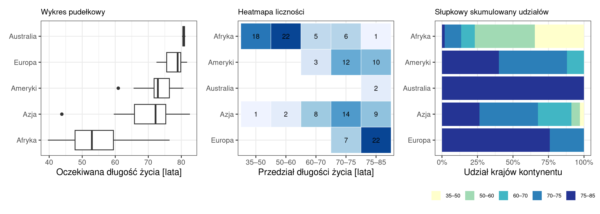
Rycina D.1: Oczekiwana długość życia według kontynentu, 2007: wykres pudełkowy (po lewej), heatmapa liczności (w środku) i wykres słupkowy skumulowany udziałów (po prawej)
Wykres
Co pokazuje
wykres pudełkowy
medianę, rozstęp kwartylowy i obserwacje odstające w pięciu grupach naraz
heatmapa kontynent × przedział długości życia
bloki zerowe: w Europie i Amerykach nie ma ani jednego kraju poniżej 60 lat, w Afryce 40 z 52 krajów mieści się poniżej 60
słupkowy skumulowany udziałów przedziałów w kontynencie
strukturę procentową: Afryka 77% krajów poniżej 60 lat, Europa 76% powyżej 75 lat
Podsumowanie
Wykres pudełkowy odpowiada na pytanie o ile różnią się mediany oczekiwanej długości życia między kontynentami; pokazuje też rozstęp kwartylowy w każdym z nich.
Heatmapa odpowiada na pytanie jakich kombinacji w danych nie ma: w Europie i w Amerykach nie ma ani jednego kraju poniżej 60 lat.
Słupkowy skumulowany odpowiada na pytanie jak dzieli się pojedynczy kontynent: 77% krajów Afryki poniżej 60 lat, 76% krajów Europy powyżej 75 lat.
Żaden z trzech wykresów nie podaje liczności grupy — 100% Australii to dwa kraje, a 76% Europy to 22 kraje. Liczność trzeba dopisać przy każdym z nich.
D.1.2 Czy średnia subregionu opisuje oczekiwaną długość życia jego krajów?
Tabela D.3: Statystyki opisowe oczekiwanej długości życia w Afryce Wschodniej i Zachodniej, 2007 [lata]
Subregion
Liczba krajów
Średnia
Mediana
Odch. std.
Rozstęp kwartylowy
Minimum
Maksimum
Afryka Wschodnia
17
54
52,52
9,91
9,88
42,1
76,4
Afryka Zachodnia
15
54,09
56,01
6,73
11,34
42,6
64,2
Kod
d2 <-filter(dane2007, subregion_pl %in%c("Afryka Wschodnia", "Afryka Zachodnia"))p1 <- d2 |>group_by(subregion_pl) |>summarise(m =mean(lifeExp)) |>ggplot(aes(subregion_pl, m)) +geom_col(fill ="grey40", width = .5) +geom_text(aes(label =round(m, 2)), vjust =-.6, size =4) +scale_y_continuous(expand =expansion(mult =c(0, .12))) +labs(title ="Słupkowy średnich", x =NULL, y ="Średnia długość życia [lata]") + motyw_trzyp2 <-ggplot(d2, aes(lifeExp, fct_rev(subregion_pl))) +geom_point(size =2.5, alpha = .8) +geom_text(data =filter(d2, lifeExp >70), aes(label = kraj),hjust =1.15, size =3.2) +labs(title ="Kropkowy: każdy kraj osobno", x ="Oczekiwana długość życia [lata]", y =NULL) + motyw_trzyp3 <-ggplot(d2, aes(lifeExp, fill = subregion_pl)) +geom_density(alpha = .5, adjust = .9) +geom_rug(aes(colour = subregion_pl), linewidth = .8, show.legend =FALSE) +scale_fill_viridis_d(name =NULL, end = .7) +scale_colour_viridis_d(end = .7) +labs(title ="Nakładające się gęstości", x ="Oczekiwana długość życia [lata]", y ="Gęstość") + motyw_trzy +theme(legend.position ="bottom", legend.text =element_text(size =9))p4 <-ggplot(d2, aes(fct_rev(subregion_pl), lifeExp)) +geom_boxplot(width = .45) +geom_jitter(width = .1, alpha = .5, size =1.8) +coord_flip() +labs(title ="Pudełkowy z punktami krajów", x =NULL,y ="Oczekiwana długość życia [lata]") + motyw_trzy(p1 + p2) / (p3 + p4)
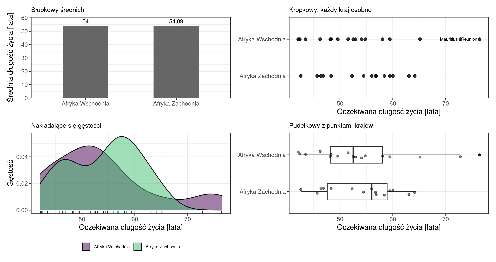
Rycina D.2: Oczekiwana długość życia w Afryce Wschodniej i Zachodniej, 2007: cztery wykresy tych samych danych
Wykres
Co pokazuje
wykres słupkowy średnich
dwa słupki praktycznie równej wysokości — powtarza tabelę i prowadzi do błędnego wniosku o podobieństwie regionów
wykres kropkowy wszystkich 32 krajów, dwa wiersze
każdy kraj z nazwą: dwie najwyższe wartości Afryki Wschodniej przypadają na państwa wyspiarskie, a kraje kontynentalne obu regionów leżą w tym samym zakresie
nakładające się wykresy gęstości, dwie krzywe na wspólnej osi
Afryka Wschodnia ma rozkład z oddzielonym drugim skupieniem, a Zachodnia jest jednolita; wspólna oś pozwala porównać kształty wprost
wykres pudełkowy z punktami krajów
medianę i rozstęp kwartylowy w obu regionach oraz położenie każdego kraju: mediana Afryki Wschodniej (52,5) jest niższa niż Afryki Zachodniej (56,0), choć średnie są prawie równe; jedyną obserwacją odstającą jest Reunion (76,4 roku) w Afryce Wschodniej
Podsumowanie
Średnie obu regionów w tabeli statystyk różnią się o 0,09 roku, co sugeruje dwa takie same regiony.
Wykres słupkowy średnich pokazuje tylko jedną liczbę na region, mimo że jest poprawnie wykonany. Li (2022, reguła 1) odradza porównywanie średnich grup na wykresie słupkowym.
Pozostałe trzy wykresy pokazują rzeczywiste zróżnicowanie: odchylenie 9,91 roku w Afryce Wschodniej wobec 6,73 w Zachodniej, a dwie najwyższe wartości na wschodzie dotyczą państw wyspiarskich.
D.2 C. Wydłużanie się życia na świecie w latach 1952–2007
Czego chcemy się dowiedzieć: jak szybko i czy równomiernie wydłużało się życie, gdzie wystąpiły pogorszenia i czy dystans między krajami zmalał.
Pytania badawcze w tym problemie:
W jakim tempie rosła mediana oczekiwanej długości życia w latach 1952–2007?
W których krajach oczekiwana długość życia obniżyła się?
O ile wydłużyło się życie w subregionach i czy regiony o najniższym poziomie wyjściowym nadrobiły dystans?
Jak przebiegały zmiany oczekiwanej długości życia i PKB per capita w Polsce na tle świata i Europy?
D.2.1 W jakim tempie rosła mediana oczekiwanej długości życia w latach 1952–2007?
Tabela D.4: Mediana i średnia oczekiwanej długości życia oraz przyrost mediany w kolejnych latach [lata]
Rok
Mediana
Średnia
Przyrost mediany
1952
45,1
49,1
—
1957
48,4
51,5
3.3
1962
50,9
53,6
2.5
1967
53,8
55,7
2.9
1972
56,5
57,6
2.7
1977
59,7
59,6
3.2
1982
62,4
61,5
2.7
1987
65,8
63,2
3.4
1992
67,7
64,2
1.9
1997
69,4
65
1.7
2002
70,8
65,7
1.4
2007
71,9
67
1.1
Kod
med <- dane |>group_by(year) |>summarise(m =median(lifeExp)) |>mutate(przyrost =c(NA, diff(m)))p1 <-ggplot(med, aes(year, m)) +geom_line(linewidth =1) +geom_point(size =2) +labs(title ="Wykres liniowy", x ="Rok", y ="Mediana długości życia [lata]") + motyw_trzyp2 <-ggplot(med, aes(factor(year), m)) +geom_col(fill ="grey40") +labs(title ="Słupkowy mediany w kolejnych latach", x ="Rok",y ="Mediana długości życia [lata]") + motyw_trzy +theme(axis.text.x =element_text(angle =90, vjust = .5))p3 <-ggplot(filter(med, !is.na(przyrost)), aes(factor(year), przyrost)) +geom_col(fill ="grey40") +geom_text(aes(label =sprintf("%.1f", przyrost)), vjust =-.4, size =3.2) +labs(title ="Słupkowy przyrostów pięcioletnich", x ="Rok", y ="Przyrost mediany [lata]") + motyw_trzy +theme(axis.text.x =element_text(angle =90, vjust = .5))p1 + p2 + p3
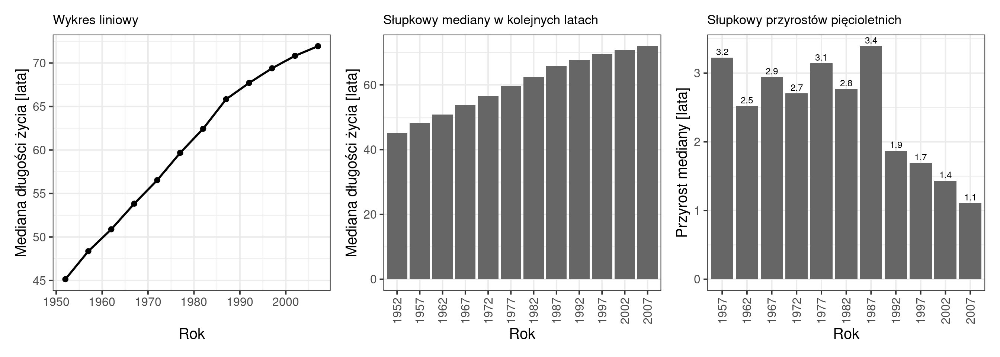
Rycina D.3: Mediana oczekiwanej długości życia, 142 kraje, 1952–2007: wykres liniowy, wykres słupkowy mediany i wykres słupkowy przyrostów pięcioletnich
Wykres
Co pokazuje
wykres liniowy
wzrost na całym okresie i jego wypłaszczenie po 1987 roku
wykres słupkowy mediany w kolejnych latach
poziom w każdym z 12 pomiarów osobno, bez sugerowania wartości pośrednich
wykres słupkowy przyrostów pięcioletnich
wprost odpowiada na pytanie „jak szybko” — spadek z +3,4 do +1,1 roku
Kod: przygotowanie danych
# Zakres osi y na rycinie: wykres liniowy (p1) i słupkowy mediany (p2) z poprzedniego bloku.y_lin <-ggplot_build(p1)$layout$panel_params[[1]]$y.rangey_slup <-ggplot_build(p2)$layout$panel_params[[1]]$y.rangem_pocz <- med$m[1]m_kon <- med$m[nrow(med)]# Część wysokości osi y zajmowana przez przyrost mediany 1952-2007.udz_lin <- (m_kon - m_pocz) /diff(y_lin)udz_slup <- (m_kon - m_pocz) /diff(y_slup)
Podsumowanie
Pytanie dotyczy tempa wzrostu, a dwa pierwsze wykresy przedstawiają poziom.
Wykres liniowy i słupkowy mediany pokazują te same 12 wartości, ale z różnym zakresem osi Y. Oś wykresu słupkowego zaczyna się od zera, bo wartość przedstawia długość słupka (Wilke, 2019, rozdz. 17). Oś wykresu liniowego ggplot2 dopasował do zakresu danych: od ok. 44 do 73 lat.
Wzrost mediany z 45,1 do 71,9 roku zajmuje na wykresie liniowym 91% wysokości osi Y, a na słupkowym — 34%. Ten sam przyrost jest więc na wykresie liniowym optycznie większy. Nachylenie linii zależy od zakresu osi Y, dlatego tempo zmian odczytuje się z wartości na osi, a nie z nachylenia linii.
Wykres przyrostów odpowiada na pytanie wprost i pokazuje wynik, który na wykresie liniowym jest mniej widoczny: tempo wzrostu spadło trzykrotnie.
Zestawienie wykresu liniowego i słupkowego pokazuje też, że linia łącząca pomiary z 1987 i 1992 roku przedstawia założenie o wartościach pośrednich, których zbiór nie zawiera.
D.2.2 W których krajach oczekiwana długość życia obniżyła się?
Kod
zm <- dane |>arrange(country, year) |>group_by(kraj, kontynent) |>mutate(z = lifeExp -lag(lifeExp)) |>ungroup()kraje <- zm |>group_by(kraj, kontynent) |>summarise(spadki =sum(z <0, na.rm =TRUE),najglebszy =min(z, na.rm =TRUE), .groups ="drop")tibble( Ujęcie =c("Porównanie 1952 z 2007", "Wszystkie 11 pięcioleci","w tym w Afryce", "w tym w Europie", "w tym w Azji", "w tym w Amerykach"),`Liczba krajów ze spadkiem`=c(sum(dane2007$lifeExp < dane$lifeExp[dane$year ==1952][match(dane2007$country, dane$country[dane$year ==1952])]),sum(kraje$spadki >0),sum(kraje$spadki >0& kraje$kontynent =="Afryka"),sum(kraje$spadki >0& kraje$kontynent =="Europa"),sum(kraje$spadki >0& kraje$kontynent =="Azja"),sum(kraje$spadki >0& kraje$kontynent =="Ameryki"))) |>tab()
Tabela D.5: Liczba krajów ze spadkiem oczekiwanej długości życia, 1952–2007
Ujęcie
Liczba krajów ze spadkiem
Porównanie 1952 z 2007
2
Wszystkie 11 pięcioleci
52
w tym w Afryce
30
w tym w Europie
13
w tym w Azji
5
w tym w Amerykach
4
Kod
kraje |>arrange(najglebszy) |>slice_head(n =8) |>transmute(Kraj = kraj, Kontynent = kontynent,`Pięcioleci ze spadkiem`= spadki,`Największy spadek w jednym pięcioleciu [lata]`=round(najglebszy, 1)) |>tab()
Tabela D.6: Osiem krajów o największym spadku oczekiwanej długości życia w jednym pięcioleciu
Kraj
Kontynent
Pięcioleci ze spadkiem
Największy spadek w jednym pięcioleciu [lata]
Rwanda
Afryka
2
-20,4
Zimbabwe
Afryka
3
-13,6
Lesotho
Afryka
3
-11
Eswatini
Afryka
3
-10,4
Botswana
Afryka
3
-10,2
Kambodża
Azja
2
-9,1
Namibia
Afryka
2
-7,4
Południowa Afryka
Afryka
3
-6,9
Kod
zm <- dane |>arrange(country, year) |>group_by(kraj, kontynent) |>mutate(z = lifeExp -lag(lifeExp)) |>ungroup() |>filter(!is.na(z))ggplot(zm, aes(factor(year), fct_reorder(kraj, z, min), fill = z)) +geom_tile() +facet_grid(kontynent ~ ., scales ="free_y", space ="free_y", switch ="y") +scale_fill_gradient2(name ="Zmiana\n[lata]", low ="#2166ac", mid ="white",high ="#b2182b", midpoint =0, limits =c(-5, 5), oob = squish) +labs(title ="Zmiana w pięcioleciu: wszystkie kraje w panelach kontynentów",x ="Koniec pięciolecia", y =NULL) +theme_minimal(base_size =12) +theme(axis.text.y =element_blank(), panel.grid =element_blank(),strip.text.y.left =element_text(angle =0))
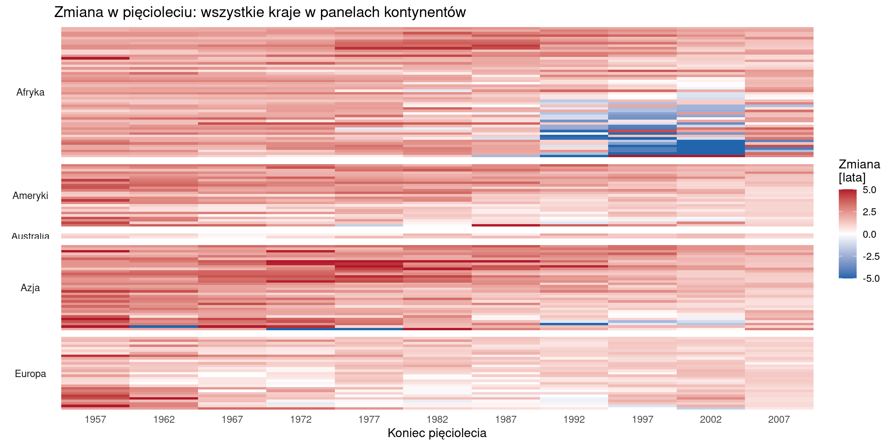
Rycina D.4: Zmiana oczekiwanej długości życia w pięcioleciach: wykres liniowy wszystkich 142 krajów
Kod
afr <- dane |>filter(kontynent =="Afryka") |>arrange(country, year) |>group_by(kraj) |>mutate(z = lifeExp -lag(lifeExp)) |>ungroup() |>filter(!is.na(z))ggplot(afr, aes(factor(year), fct_reorder(kraj, z, min), fill = z)) +geom_tile(colour ="white", linewidth = .2) +scale_fill_gradient2(name ="Zmiana\n[lata]", low ="#2166ac", mid ="white",high ="#b2182b", midpoint =0, limits =c(-12, 12), oob = squish) +labs(title ="Ten sam wykres dla jednego kontynentu: 52 kraje Afryki",subtitle ="Przy 52 wierszach nazwy krajów są czytelne i można wskazać konkretne państwo",x ="Koniec pięciolecia", y =NULL) +theme_minimal(base_size =10) +theme(panel.grid =element_blank())
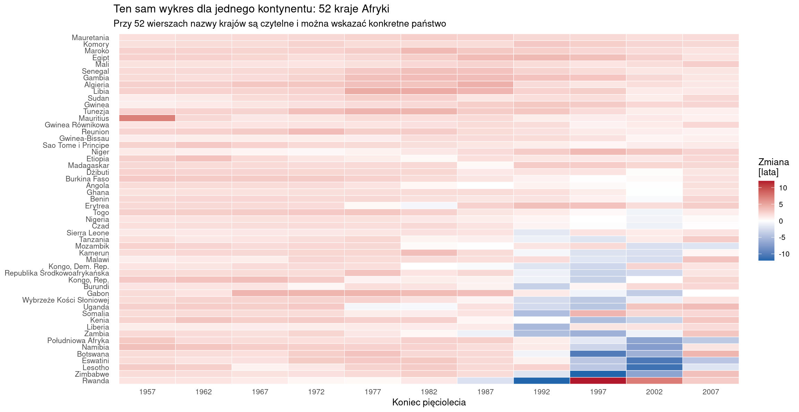
Rycina D.5: Zmiana oczekiwanej długości życia w pięcioleciach: heatmapa kraj × pięciolecie w panelach kontynentów
Kod
kraje <- dane |>arrange(country, year) |>group_by(kraj, kontynent) |>mutate(z = lifeExp -lag(lifeExp)) |>summarise(najglebszy =min(z, na.rm =TRUE), .groups ="drop") |>filter(najglebszy <0) |>slice_min(najglebszy, n =20)ggplot(kraje, aes(najglebszy, fct_reorder(kraj, -najglebszy), fill = kontynent)) +geom_col() +scale_fill_brewer(palette ="Dark2", name =NULL) +labs(title ="Dwadzieścia najgłębszych spadków, barwa = kontynent",x ="Największy spadek w jednym pięcioleciu [lata]", y =NULL) +theme_minimal(base_size =14) +theme(legend.position ="bottom")
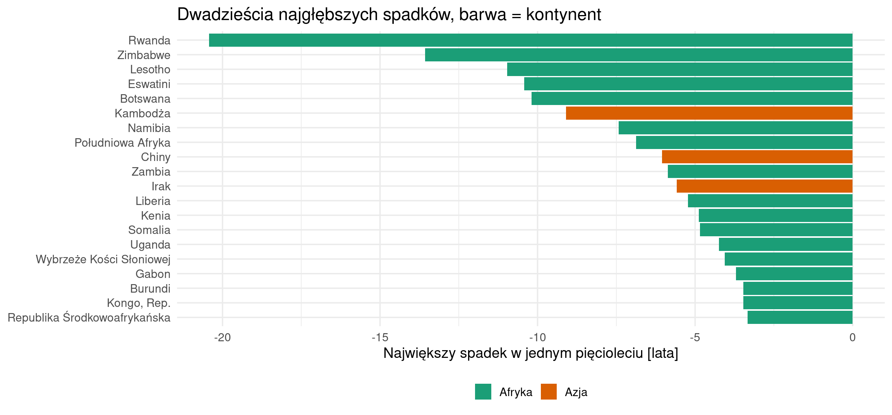
Rycina D.6: Dwadzieścia największych spadków oczekiwanej długości życia w jednym pięcioleciu: wykres słupkowy rozbieżny
Wykres
Co pokazuje
wykres liniowy wszystkich 142 krajów
ogólny kierunek zmian i kilka przebiegów odbiegających od pozostałych
heatmapa kraj × pięciolecie z krajami pogrupowanymi w panele kontynentów
wszystkie 142 kraje i 11 pięcioleci naraz, a podział na panele pozwala przypisać spadki do kontynentu: skupienie w Afryce po 1987 roku i w Europie w latach 1992–1997
wykres słupkowy rozbieżny najgłębszych spadków
dokładną wielkość i nazwę kraju dla kilkunastu przypadków
Podsumowanie
Statystyka porównująca rok początkowy z końcowym wskazuje 2 kraje.
Ta sama zmienna rozpatrywana w kolejnych pięcioleciach wskazuje 52 kraje.
Różnica wynika ze sformułowania pytania, a potrzebę pytania o pięciolecia pokazuje heatmapa.
D.2.3 O ile wydłużyło się życie w subregionach i czy regiony o najniższym poziomie wyjściowym nadrobiły dystans?
Tabela D.7: Średnia oczekiwana długość życia w subregionach w 1952 i 2007 roku: dziewięć subregionów o największym przyroście [lata]
Subregion
Rok 1952
Rok 2007
Zmiana
Afryka Północna
42,3
70,2
27,9
Ameryka Środkowa
47,8
73,7
25,9
Azja Zachodnia
46,6
72,4
25,8
Azja Południowo-Wschodnia
45,1
70,4
25,3
Azja Wschodnia
52,3
75,6
23,2
Azja Południowa
40,8
63,6
22,8
Ameryka Południowa
53,5
73,3
19,8
Karaiby
54,1
72,1
18
Afryka Zachodnia
36,2
54,1
17,9
Kod
sub_zm |>slice_tail(n =9) |>tab()
Tabela D.8: Średnia oczekiwana długość życia w subregionach w 1952 i 2007 roku: dziewięć subregionów o najmniejszym przyroście [lata]
Subregion
Rok 1952
Rok 2007
Zmiana
Europa Południowa
61
77,3
16,3
Afryka Wschodnia
40
54
14
Afryka Środkowa
37,9
51,6
13,7
Europa Zachodnia
68,6
80,1
11,6
Australia i Nowa Zelandia
69,3
80,7
11,5
Europa Wschodnia
62,9
74,3
11,4
Ameryka Północna
68,6
79,4
10,9
Europa Północna
70,1
79,8
9,8
Afryka Południowa
43,6
47
3,5
Kod
kont <- dane |>distinct(subregion_pl, kontynent)sub <- dane |>filter(year %in%c(1952, 2007)) |>group_by(subregion_pl, year) |>summarise(m =mean(lifeExp), .groups ="drop") |>pivot_wider(names_from = year, values_from = m, names_prefix ="r") |>left_join(kont, by ="subregion_pl") |>mutate(zmiana = r2007 - r1952, subregion_pl =fct_reorder(subregion_pl, r2007))p1 <-ggplot(sub, aes(y = subregion_pl)) +geom_segment(aes(x = r1952, xend = r2007, yend = subregion_pl), linewidth =1, colour ="grey60") +geom_point(aes(x = r1952), size =2.5, colour ="#b2182b") +geom_point(aes(x = r2007), size =2.5, colour ="#2166ac") +labs(title ="Hantlowy:\n1952 (czerwony) → 2007 (niebieski)", x ="Średnia długość życia [lata]", y =NULL) + motyw_trzyp2 <-ggplot(sub, aes(fct_reorder(subregion_pl, zmiana), zmiana, fill = kontynent)) +geom_col() +coord_flip() +scale_fill_brewer(palette ="Dark2", name =NULL) +labs(title ="Słupkowy zmiany,\nbarwa = kontynent", x =NULL, y ="Zmiana 1952–2007 [lata]") + motyw_trzy +theme(legend.position ="bottom", legend.text =element_text(size =9))p3 <-ggplot(sub, aes(r1952, r2007)) +geom_abline(slope =1, intercept =0, linetype ="dashed") +geom_point(size =2.5) +# Podpisy wszystkich subregionów; ggrepel odsuwa etykiety, aby się nie nakładały. ggrepel::geom_text_repel(aes(label = subregion_pl), size =2.6, max.overlaps =Inf,min.segment.length =0, segment.colour ="grey60", seed =1) +scale_x_continuous(limits =c(30, 85), breaks =seq(30, 85, 10)) +scale_y_continuous(limits =c(30, 85), breaks =seq(30, 85, 10)) +coord_fixed() +labs(title ="Wykres rozrzutu:\npoziom 1952 wobec 2007", x ="Średnia w 1952 [lata]",y ="Średnia w 2007 [lata]") + motyw_trzyp1 + p2 + p3
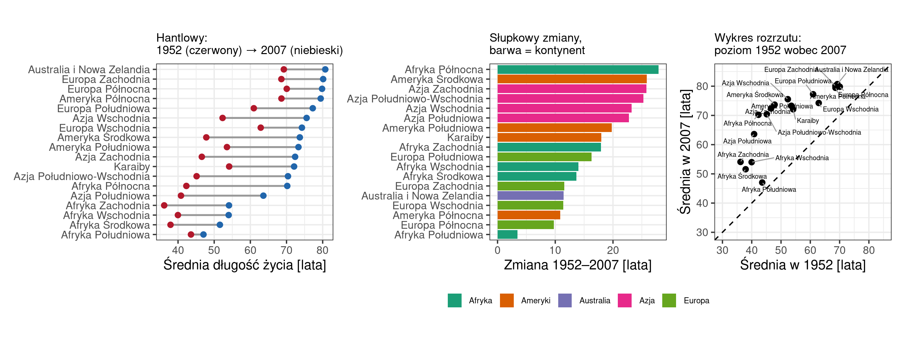
Rycina D.7: Średnia oczekiwana długość życia w subregionach w 1952 i 2007 roku: wykres hantlowy, wykres słupkowy zmiany i wykres rozrzutu z linią równości
Wykres
Co pokazuje
wykres hantlowy: punkt 1952 i 2007 połączony odcinkiem
oba poziomy i zmianę jednym znakiem graficznym; Afryka Północna i Afryka Zachodnia startowały z poziomu 42,3 i 36,2, a rozeszły się do 70,2 i 54,1
wykres słupkowy zmiany
ranking według wielkości zmiany, odczytywany dokładnie; nie pokazuje poziomu wyjściowego — Europa Północna (+9,8) wygląda na jeden z najsłabszych wyników, choć startowała z najwyższego poziomu (70,1 roku w 1952)
wykres rozrzutu poziom 1952 wobec 2007 z linią równości, obie osie w tej samej skali
czy subregiony zbliżyły się do siebie, czy rozeszły — odległość od linii równości to zmiana, a rozrzut wzdłuż niej to zróżnicowanie
Podsumowanie
Pytanie obejmuje dwie wielkości: poziom i zmianę.
Wykres słupkowy pokazuje tylko drugą: Europa Północna ma na nim drugi najmniejszy przyrost (+9,8), choć w 1952 roku miała najwyższy poziom wyjściowy (70,1).
Wykres hantlowy pokazuje obie wielkości: Europa Północna ma najwyższy poziom spośród subregionów w 1952 roku i zajmuje 3. miejsce w 2007 roku.
Afryka Południowa +3,5 to jedyny subregion, dla którego oba wykresy prowadzą do tego samego wniosku. Wybór wykresu zmienia więc odpowiedź w konkretnych przypadkach, których nie można wskazać przed wykonaniem wykresów.
D.2.4 Jak przebiegały zmiany oczekiwanej długości życia i PKB per capita w Polsce na tle świata i Europy?
Tabela D.9: Oczekiwana długość życia [lata] i PKB per capita [USD] w Polsce na tle mediany świata, 1952–2007
Rok
Polska: lata
Świat: lata
Różnica
Polska: PKB
Krotność świata
1952
61,3
45,1
16,2
4 029
2,05
1957
65,8
48,4
17,4
4 734
2,18
1962
67,6
50,9
16,8
5 339
2,29
1967
69,6
53,8
15,8
6 557
2,45
1972
70,8
56,5
14,3
8 007
2,4
1977
70,7
59,7
11
9 508
2,5
1982
71,3
62,4
8,9
8 452
2
1987
71
65,8
5,1
9 082
2,12
1992
71
67,7
3,3
7 739
1,76
1997
72,8
69,4
3,4
10 160
2,12
2002
74,7
70,8
3,8
12 002
2,26
2007
75,6
71,9
3,6
15 390
2,51
Kod
sw <- dane |>group_by(year) |>summarise(med_le =median(lifeExp), med_pkb =median(gdpPercap))pl <- dane |>filter(kraj =="Polska") |>arrange(year) |>left_join(sw, by ="year")p1 <-ggplot(pl, aes(gdpPercap, lifeExp)) +geom_path(linewidth = .8, colour ="grey50") +geom_point(size =2.5) +geom_text(data =filter(pl, year %in%c(1952, 1972, 1992, 2007)),aes(label = year), size =3.2, hjust =-.2) +scale_x_continuous(labels =label_number(big.mark =" ")) +labs(title ="Trajektoria Polski: PKB a długość życia", x ="PKB per capita [USD]",y ="Oczekiwana długość życia [lata]") + motyw_trzyp2a <-ggplot(pl, aes(year, lifeExp)) +geom_line(linewidth =1) +geom_point(size =1.6) +labs(title ="Długość życia w Polsce", x =NULL, y ="Lata") + motyw_trzyp2b <-ggplot(pl, aes(year, gdpPercap)) +geom_line(linewidth =1) +geom_point(size =1.6) +scale_y_continuous(labels =label_number(big.mark =" ")) +labs(title ="PKB per capita w Polsce", x ="Rok", y ="USD") + motyw_trzyp3 <-ggplot(pl, aes(factor(year), lifeExp - med_le)) +geom_col(fill ="grey40") +geom_text(aes(label =sprintf("%.1f", lifeExp - med_le)), vjust =-.4, size =3) +labs(title ="Przewaga Polski nad medianą świata", x ="Rok", y ="Różnica [lata]") + motyw_trzy +theme(axis.text.x =element_text(angle =90, vjust = .5))p1 + (p2a / p2b)
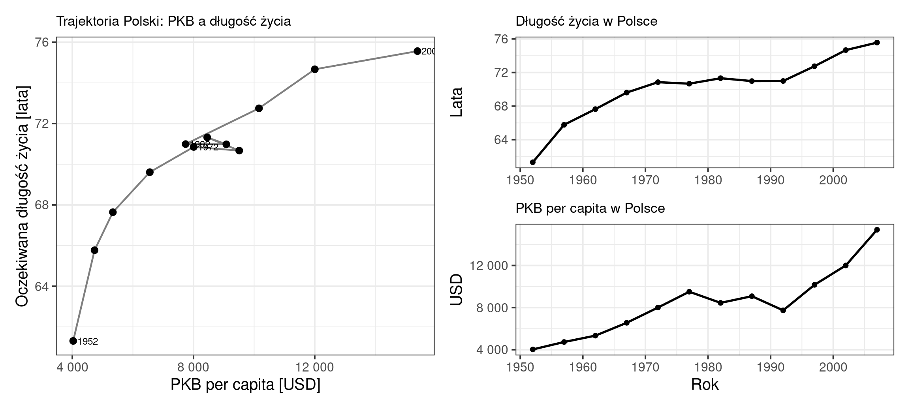
Rycina D.8: Oczekiwana długość życia i PKB per capita w Polsce, 1952–2007: wykres rozrzutu z połączonymi punktami i dwa wykresy liniowe
Kod
sw <- dane |>group_by(year) |>summarise(min =min(lifeExp), q1 =quantile(lifeExp, .25), med =median(lifeExp),q3 =quantile(lifeExp, .75), max =max(lifeExp))pl <- dane |>filter(kraj =="Polska") |>left_join(select(sw, year, med), by ="year")p1 <-ggplot(sw, aes(year)) +geom_ribbon(aes(ymin = min, ymax = max), fill ="grey88") +geom_ribbon(aes(ymin = q1, ymax = q3), fill ="grey70") +geom_line(aes(y = med), linewidth = .9, colour ="grey25") +geom_line(data = pl, aes(y = lifeExp), colour ="#b2182b", linewidth =1.3) +annotate("text", x =2007, y =76.5, label ="Polska", colour ="#b2182b", hjust =1.1, size =5) +labs(title ="Polska na tle rozkładu świata",subtitle ="Wstęgi: zakres min–max i przedział międzykwartylowy; linia ciemna: mediana",x ="Rok", y ="Oczekiwana długość życia [lata]") +theme_minimal(base_size =15)p2 <-ggplot(pl, aes(factor(year), lifeExp - med)) +geom_col(fill ="grey40") +geom_text(aes(label =sprintf("%.1f", lifeExp - med)), vjust =-.4, size =3.4) +labs(title ="Przewaga Polski nad medianą świata", x ="Rok", y ="Różnica [lata]") +theme_minimal(base_size =14) +theme(axis.text.x =element_text(angle =90, vjust = .5))p1 + p2
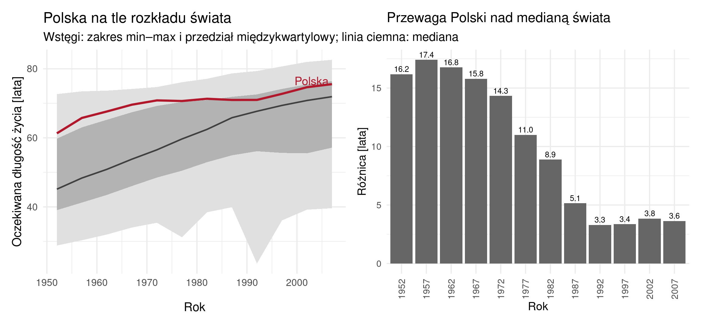
Rycina D.9: Oczekiwana długość życia w Polsce a mediana świata, 1952–2007: wykres słupkowy różnicy
Kod
wsteg <-function(d, tytul, podtyt) { s <- d |>group_by(year) |>summarise(min =min(lifeExp), q1 =quantile(lifeExp, .25), med =median(lifeExp),q3 =quantile(lifeExp, .75), max =max(lifeExp)) pl <-filter(dane, kraj =="Polska")ggplot(s, aes(year)) +geom_ribbon(aes(ymin = min, ymax = max), fill ="grey88") +geom_ribbon(aes(ymin = q1, ymax = q3), fill ="grey70") +geom_line(aes(y = med), linewidth = .9, colour ="grey25") +geom_line(data = pl, aes(y = lifeExp), colour ="#b2182b", linewidth =1.3) +labs(title = tytul, subtitle = podtyt, x ="Rok", y ="Oczekiwana długość życia [lata]") +theme_minimal(base_size =13)}p1 <-wsteg(dane, "Polska na tle świata", "Polska powyżej mediany we wszystkich 12 latach")p2 <-wsteg(filter(dane, kontynent =="Europa"), "Polska na tle Europy","Polska poniżej mediany we wszystkich 12 latach")p1 + p2
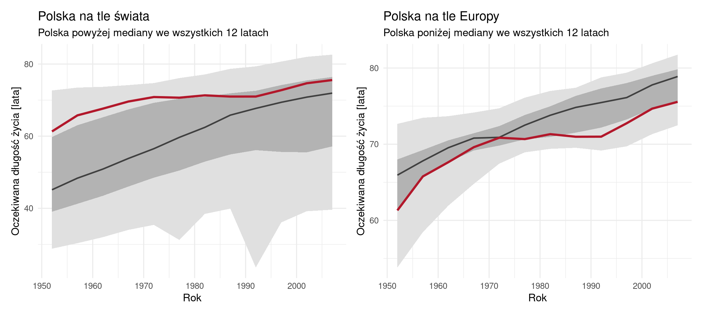
Rycina D.10: Oczekiwana długość życia w Polsce na tle rozkładu w świecie i w Europie, 1952–2007: wykresy wstęgowe
Wykres
Co pokazuje
wykres rozrzutu z połączonymi punktami — trajektoria lifeExp wobec gdpPercap
obie zmienne i czas w jednym obrazie; zastój 1972–1992 jako poziomy zygzak
dwa wykresy liniowe obok siebie: lifeExp i gdpPercap w czasie
przebieg każdej zmiennej osobno, z osią czasu wprost; zastój widoczny jako odcinek poziomy
słupkowy różnicy między Polską a medianą świata w każdym roku
przewaga Polski zmalała z 16,2 do 3,6 roku — wynik, którego żaden z dwóch poprzednich wykresów nie zawiera
wstęgowy: zakres min–max świata, przedział międzykwartylowy i mediana, na tym przebieg Polski
pozycję Polski wewnątrz całego rozkładu świata w każdym roku: położenie powyżej trzeciego kwartyla w latach 50. i zbliżanie się do mediany po 1990 roku
ten sam wykres wstęgowy liczony dla samej Europy
zmianę wniosku po zmianie grupy odniesienia: wobec świata Polska leży powyżej mediany we wszystkich 12 latach, wobec Europy — poniżej niej we wszystkich 12 latach
Podsumowanie
Wykres rozrzutu z połączonymi punktami jest najtrudniejszy w odbiorze, ponieważ czas odczytuje się z kolejności punktów.
Dwa wykresy liniowe odpowiadają na pytanie szybciej.
Trzeci wykres pokazuje, że sformułowanie „na tle świata” wymaga obliczenia innej wielkości: przewaga Polski zmalała, ponieważ mediana świata wzrosła z 45,1 do 71,9 roku.
Wybór wykresu i wybór wielkości to dwie decyzje, nie jedna.
Zmiana grupy odniesienia odwraca wniosek: wobec mediany świata Polska jest powyżej przez cały okres (od +16,2 do +3,6 roku), wobec mediany Europy — poniżej przez cały okres (od −4,6 do −3,3 roku), z najmniejszym dystansem w 1972 roku (−0,1).
Grupę odniesienia wybiera autor analizy i należy ją podać przy wyniku.
D.3 E. Związek zamożności z długością życia
Czego chcemy się dowiedzieć: czy w bogatszych krajach żyje się dłużej, jak silny jest ten związek i gdzie się nie sprawdza.
Pytania badawcze w tym problemie:
Czy zależność między PKB per capita a oczekiwaną długością życia jest jednakowa we wszystkich grupach dochodowych?
Które kraje łączą wysokie PKB z długim życiem, a w których te cechy się rozchodzą?
D.3.1 Czy zależność między PKB per capita a oczekiwaną długością życia jest jednakowa we wszystkich grupach dochodowych?
Kod
# Jedna funkcja opisuje zależność w dowolnym podzbiorze, dzięki czemu kod się nie powtarza.opis_zaleznosci <-function(d, etykieta) { ct <-suppressWarnings(cor.test(d$gdpPercap, d$lifeExp, method ="spearman"))tibble(`Grupa dochodowa`= etykieta, n =nrow(d),`Spearman rho`=round(ct$estimate, 3),`p-value`=format.pval(ct$p.value, digits =2))}grupy <-filter(dane2007, !is.na(income_grp))bind_rows(opis_zaleznosci(dane2007, "WSZYSTKIE KRAJE"),map_dfr(sort(unique(grupy$income_grp)), \(g) opis_zaleznosci(filter(grupy, income_grp == g), g))) |>tab()
Tabela D.10: Współczynnik korelacji Spearmana między PKB per capita a oczekiwaną długością życia według grupy dochodowej, 2007
Grupa dochodowa
n
Spearman rho
p-value
WSZYSTKIE KRAJE
142
0,857
<2e-16
1. Wysokie dochody: OECD
29
0,439
0.018
2. Wysokie dochody: poza OECD
11
0,618
0.048
3. Wyższe średnie dochody
35
0,252
0.14
4. Niższe średnie dochody
31
0,568
0.001
5. Niskie dochody
34
0,549
0.00094
Kod
d <-filter(dane2007, !is.na(income_grp))ggplot(d, aes(gdpPercap, lifeExp)) +geom_point(size =2) +facet_wrap(~ income_grp, scales ="free", ncol =3, labeller =label_wrap_gen(24)) +scale_x_continuous(labels =label_number(big.mark =" ")) +labs(title ="Rozrzutu w panelach grup dochodowych",x ="PKB per capita [USD]", y ="Oczekiwana długość życia [lata]") +theme_minimal(base_size =13)
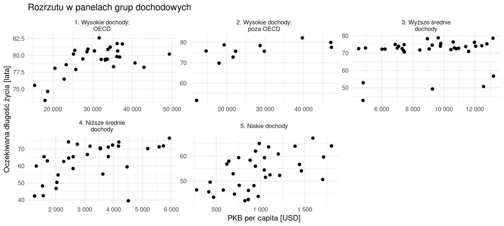
Rycina D.11: Oczekiwana długość życia a PKB per capita, 2007: wykres rozrzutu w panelach grup dochodowych
Kod
d <-filter(dane2007, !is.na(income_grp))d |>group_by(income_grp) |>summarise(rho =suppressWarnings(cor(gdpPercap, lifeExp, method ="spearman"))) |>ggplot(aes(rho, fct_rev(income_grp))) +geom_col(fill ="grey40") +geom_text(aes(label =sprintf("%.2f", rho)), hjust =-.15, size =6) +expand_limits(x = .95) +scale_y_discrete(labels =label_wrap(24)) +labs(title ="Współczynnik Spearmana w grupach dochodowych", x ="rho", y =NULL) +theme_minimal(base_size =16)
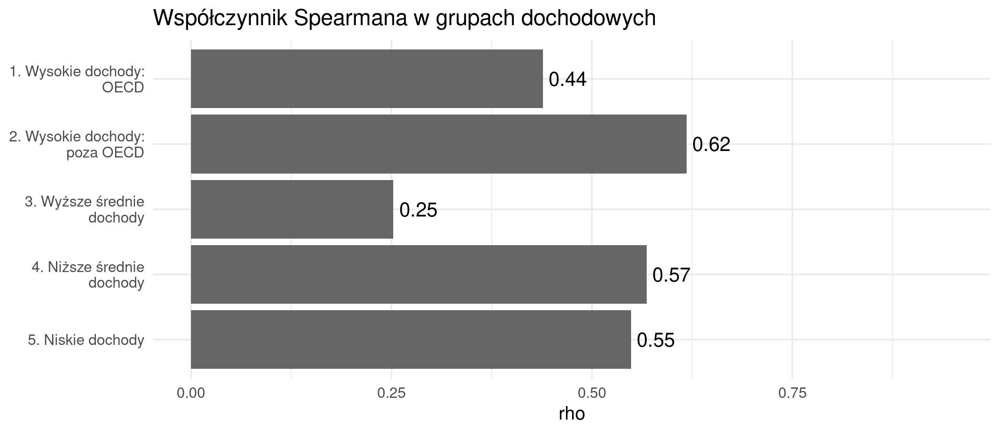
Rycina D.12: Współczynnik korelacji Spearmana według grupy dochodowej, 2007: wykres słupkowy
Kod
dane |>filter(!is.na(income_grp)) |>group_by(income_grp, year) |>summarise(rho =suppressWarnings(cor(gdpPercap, lifeExp, method ="spearman")), .groups ="drop") |># Klasy siły korelacji według skali z rozdziału o analizie korelacji.mutate(klasa =cut(rho, c(-1, 0, .1, .3, .5, .7, .9, 1), right =FALSE, include.lowest =TRUE,labels =c("< 0 (ujemna)", "0–0,1", "0,1–0,3 słaba", "0,3–0,5 przeciętna","0,5–0,7 wysoka", "0,7–0,9 bardzo wysoka", "0,9–1 prawie pełna"))) |>ggplot(aes(factor(year), fct_rev(income_grp), fill = klasa)) +geom_tile(colour ="white", show.legend =c(fill =TRUE)) +geom_text(aes(label =sub("\\.", ",", sprintf("%.2f", rho)),colour = klasa %in%c("0,5–0,7 wysoka", "0,7–0,9 bardzo wysoka", "0,9–1 prawie pełna")),size =3.6, show.legend =FALSE) +scale_colour_manual(values =c("grey10", "white"), guide ="none") +scale_fill_manual(name ="Siła korelacji", drop =FALSE,# Wielobarwna paleta sekwencyjna YlGnBu (ColorBrewer), rozpoznawalna przy# zaburzeniach rozpoznawania barw: klasy uporządkowane od ujemnej do prawie pełnej.values = RColorBrewer::brewer.pal(7, "YlGnBu")) +scale_y_discrete(labels =label_wrap(24)) +labs(title ="Współczynnik Spearmana: grupa dochodowa × rok", x ="Rok", y =NULL) +theme_minimal(base_size =14) +theme(panel.grid =element_blank())
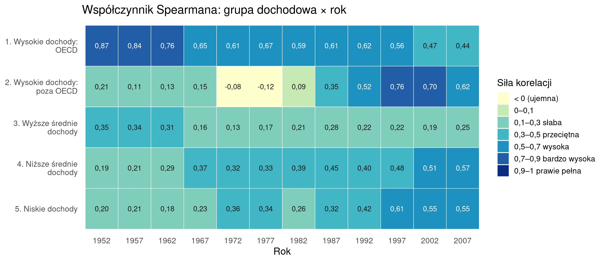
Rycina D.13: Współczynnik korelacji Spearmana według grupy dochodowej i roku: heatmapa
Wykres
Co pokazuje
wykres rozrzutu w panelach według grup
w każdym panelu zakres obu osi jest inny, a chmura punktów ma inny kształt
wykres słupkowy współczynnika Spearmana dla grup
w grupie wyższych średnich dochodów związek jest najsłabszy (ρ = 0,252), a w pozostałych czterech wyraźnie silniejszy
heatmapa grupa × rok, barwa = ρ
czy słaby związek w grupie 3 występuje we wszystkich 12 latach, czy tylko w 2007
Podsumowanie
Dla wszystkich 142 krajów ρ = 0,857.
W obrębie każdej z pięciu grup dochodowych współczynnik jest wyraźnie niższy (0,25–0,62), a w grupie wyższych średnich dochodów wynosi 0,252 i nie jest istotny statystycznie (p = 0,14).
Opis danych jednym współczynnikiem dla całego zbioru i opis tych samych danych w podziale na grupy prowadzą do różnych wniosków. Potrzebę obliczenia współczynników osobno pokazuje wykres rozrzutu w panelach.
Ograniczenie interpretacji: zestawienie opisuje siłę związku w grupach. Zbiór nie zawiera zmiennych, które pozwalają wskazać przyczynę różnicy między grupami.
Kod: przygotowanie danych
library(sf); library(rnaturalearth)
Linking to GEOS 3.10.2, GDAL 3.4.1, PROJ 8.2.1; sf_use_s2() is TRUE
Kod: przygotowanie danych
if (!exists("swiat")) { popr_nazw <-c("Bahrain"="Bahrain", "Bosnia and Herzegovina"="Bosnia and Herz.","Central African Republic"="Central African Rep.", "Comoros"="Comoros","Congo, Dem. Rep."="Dem. Rep. Congo", "Congo, Rep."="Congo","Cote d'Ivoire"="Côte d'Ivoire", "Czech Republic"="Czechia","Dominican Republic"="Dominican Rep.", "Equatorial Guinea"="Eq. Guinea","Hong Kong, China"="Hong Kong", "Korea, Dem. Rep."="North Korea","Korea, Rep."="South Korea", "Sao Tome and Principe"="São Tomé and Principe","Slovak Republic"="Slovakia", "Swaziland"="eSwatini","United States"="United States of America", "West Bank and Gaza"="Palestine","Yemen, Rep."="Yemen") swiat <-ne_countries(scale ="medium", returnclass ="sf") |>select(name, geometry)}# Klasy wyznaczone kwartylami: ten sam podział dla obu cech.gr_pkb <-quantile(dane2007$gdpPercap, c(.25, .75))gr_le <-quantile(dane2007$lifeExp, c(.25, .75))klasy <- dane2007 |>mutate(kl_pkb =cut(gdpPercap, c(-Inf, gr_pkb, Inf), labels =c("niskie", "średnie", "wysokie")),kl_le =cut(lifeExp, c(-Inf, gr_le, Inf), labels =c("krótkie", "średnie", "długie")),sektor =paste(kl_pkb, kl_le, sep ="–"),nazwa_mapy =ifelse(country %in%names(popr_nazw), popr_nazw[country], country))# Paleta dwuzmienna 3x3 brewer.seqseq1 (pakiet pals, C. Brewer):# kolumny = klasa PKB (odcienie niebieskie), wiersze = klasa długości życia (odcienie różowe).pal_bi <-c("niskie–krótkie"="#e8e6f2", "średnie–krótkie"="#b5d3e7", "wysokie–krótkie"="#4fadd0","niskie–średnie"="#e5b4d9", "średnie–średnie"="#b8b3d8", "wysokie–średnie"="#3983bb","niskie–długie"="#de4fa6", "średnie–długie"="#b03598", "wysokie–długie"="#2a1a8a")# Mapy jednej cechy: skrajne kolumny palety dwuzmiennej (dolny wiersz i lewa kolumna).pal_pkb <-unname(pal_bi[c("niskie–krótkie", "średnie–krótkie", "wysokie–krótkie")])pal_le <-unname(pal_bi[c("niskie–krótkie", "niskie–średnie", "niskie–długie")])# Kraje spoza zbioru: szarość odróżniająca się od najjaśniejszej barwy palety.kolor_poza <-"grey75"
D.3.2 Które kraje łączą wysokie PKB z długim życiem, a w których te cechy się rozchodzą?
Kod
tibble(Granica =c("Kwartyl 1 PKB per capita", "Kwartyl 3 PKB per capita","Kwartyl 1 długości życia", "Kwartyl 3 długości życia"), Wartość =c(round(gr_pkb[1]), round(gr_pkb[2]), round(gr_le[1], 1), round(gr_le[2], 1))) |>tab()
Tabela D.11: Granice klas PKB per capita [USD] i oczekiwanej długości życia [lata], 2007
Granica
Wartość
Kwartyl 1 PKB per capita
1 625
Kwartyl 3 PKB per capita
18 009
Kwartyl 1 długości życia
57,2
Kwartyl 3 długości życia
76,4
Kod
klasy |>count(kl_le, kl_pkb) |>pivot_wider(names_from = kl_pkb, values_from = n, values_fill =0) |>rename(`Długość życia`= kl_le) |>tab()
Tabela D.12: Liczba krajów w dziewięciu sektorach, 2007 (kolumny: klasa PKB per capita)
Rycina D.15: Klasa PKB per capita i klasa oczekiwanej długości życia, 2007: dwie mapy
Kod
m <- swiat |>left_join(klasy, by =c("name"="nazwa_mapy"))mapa_bi <-ggplot(m) +geom_sf(aes(fill = sektor), colour ="grey60", linewidth = .1) +scale_fill_manual(values = pal_bi, na.value = kolor_poza, guide ="none") +coord_sf(crs ="+proj=robin") +labs(title ="Mapa dwuzmienna: PKB i długość życia w jednej barwie") +theme_minimal(base_size =14) +theme(axis.text =element_blank(), panel.grid =element_blank())legenda <-expand_grid(kl_pkb =c("niskie", "średnie", "wysokie"),kl_le =c("krótkie", "średnie", "długie")) |>mutate(sektor =paste(kl_pkb, kl_le, sep ="–"),kl_pkb =factor(kl_pkb, levels =c("niskie", "średnie", "wysokie")),kl_le =factor(kl_le, levels =c("krótkie", "średnie", "długie"))) |>ggplot(aes(kl_pkb, kl_le, fill = sektor)) +geom_tile(colour ="white") +scale_fill_manual(values = pal_bi, guide ="none") +labs(x ="PKB per capita →", y ="długość życia →") +theme_minimal(base_size =11) +theme(axis.text =element_text(size =8), panel.grid =element_blank())mapa_bi + legenda + patchwork::plot_layout(widths =c(3.2, 1))
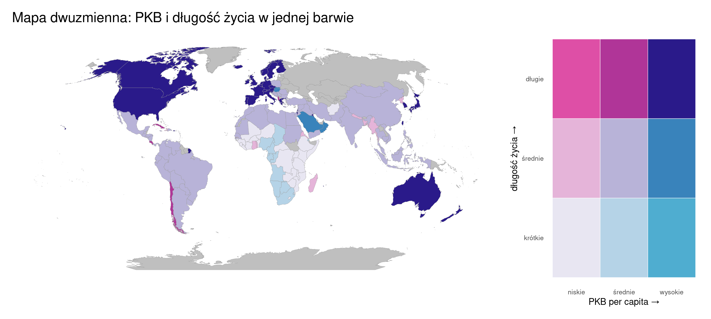
Rycina D.16: Klasa PKB per capita i klasa oczekiwanej długości życia, 2007: mapa dwuzmienna
Kod
# Heatmapa liczności: liczba krajów w każdym z dziewięciu sektorów, bez położenia na mapie.# Układ osi jak w legendzie mapy dwuzmiennej: PKB w poziomie, długość życia w pionie.klasy |>count(kl_pkb, kl_le, .drop =FALSE) |>ggplot(aes(kl_pkb, kl_le, fill = n)) +geom_tile(colour ="white", linewidth =1) +geom_text(aes(label = n, colour = n >max(n) /2), size =7, show.legend =FALSE) +scale_colour_manual(values =c("grey15", "white")) +scale_fill_distiller(palette ="Purples", direction =1, name ="Liczba\nkrajów") +labs(title =sprintf("Heatmapa: liczba krajów w dziewięciu sektorach, rok %d",unique(dane2007$year)),x ="Klasa PKB per capita", y ="Klasa oczekiwanej długości życia") +theme_minimal(base_size =15) +theme(panel.grid =element_blank())
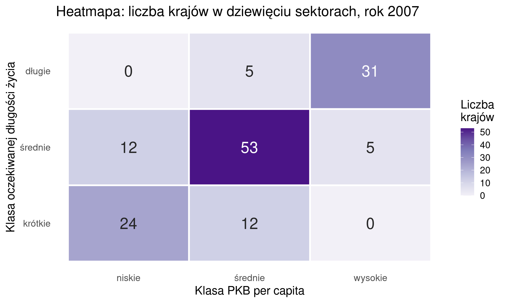
Rycina D.17: Liczba krajów w dziewięciu sektorach, 2007: heatmapa liczności
Wykres
Co pokazuje
wykres rozrzutu z liniami podziału na dziewięć sektorów
gdzie przebiegają granice klas i które kraje trafiają do sektorów skrajnych
dwie mapy obok siebie: klasa PKB i klasa długości życia
rozkład przestrzenny każdej cechy osobno, w tej samej klasyfikacji
mapa dwuzmienna: barwa złożona z klasy PKB i klasy długości życia
obie cechy jednocześnie: jedna barwa odpowiada jednemu z dziewięciu sektorów
heatmapa liczności sektorów
liczbę krajów w każdym z dziewięciu sektorów, odczytywaną wprost; bez informacji o położeniu krajów
Podsumowanie
Mapa dwuzmienna odpowiada na pytanie wprost, ale wymaga od odbiorcy poznania nowego typu legendy.
Dwie mapy obok siebie są łatwiejsze w odbiorze, lecz odpowiadają na pytanie tylko pośrednio — różnicę między nimi odbiorca musi znaleźć sam.
To samo pytanie można rozpatrzyć bez map: heatmapa liczności dziewięciu sektorów daje odpowiedź liczbową, ale nie zawiera informacji o położeniu krajów.
D.4 F. Podział świata na kraje bogate i biedne
Czego chcemy się dowiedzieć: ile krajów należy do każdej grupy zamożności, w których częściach świata leżą i czy różne klasyfikacje rozwoju dają ten sam podział.
Pytania badawcze w tym problemie:
Jak liczne są poszczególne grupy dochodowe? (Sekcja 17.5)
Czy rozmieszczenie grup dochodowych jest przestrzennie zróżnicowane?
Czy klasyfikacja gospodarcza krajów pokrywa się z klasyfikacją dochodową?
D.4.1 Czy rozmieszczenie grup dochodowych jest przestrzennie zróżnicowane?
Rycina D.19: Grupy dochodowe i liczba ludności krajów, 2007: kartodiagram
Kod
dane2007 |>mutate(grupa =fct_na_value_to_level(factor(income_grp), "brak danych")) |>count(kontynent, grupa) |>ggplot(aes(area = n, fill = grupa, subgroup = kontynent, label = grupa)) + treemapify::geom_treemap(colour ="white") + treemapify::geom_treemap_subgroup_border(colour ="black") + treemapify::geom_treemap_subgroup_text(place ="centre", grow =TRUE, alpha = .4, colour ="black") +scale_fill_brewer(palette ="Set2", name =NULL, labels =label_wrap(26)) +labs(title ="Treemap zagnieżdżony: kontynent → grupa dochodowa, powierzchnia = liczba krajów") +theme_minimal(base_size =15) +theme(legend.position ="bottom")
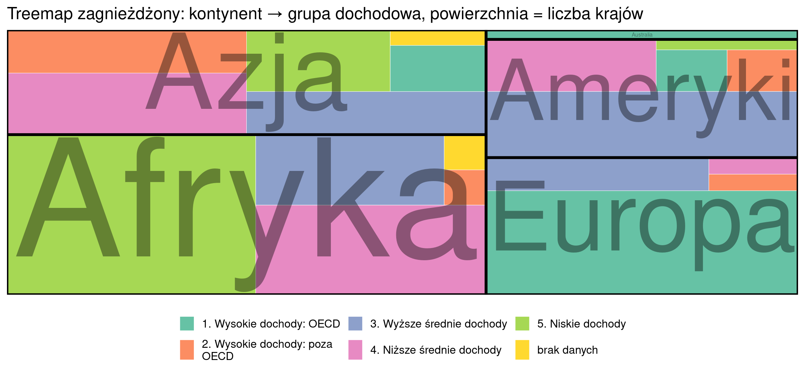
Rycina D.20: Grupy dochodowe według kontynentu, 2007: treemap, powierzchnia odpowiada liczbie krajów
Konstrukcja: cały prostokąt odpowiada wszystkim 142 krajom z roku 2007. Pierwszy poziom podziału (gruba czarna ramka) to kontynenty, drugi (barwa) to grupy dochodowe w obrębie kontynentu. Powierzchnia prostokąta jest proporcjonalna do liczby krajów; położenie prostokątów wynika z algorytmu układania i nie odpowiada położeniu geograficznemu.
Kod
# Ta sama hierarchia kontynent -> grupa dochodowa, powierzchnia = suma ludności krajów.dane2007 |>mutate(grupa =fct_na_value_to_level(factor(income_grp), "brak danych")) |>group_by(kontynent, grupa) |>summarise(ludnosc =sum(as.numeric(pop)), .groups ="drop") |>ggplot(aes(area = ludnosc, fill = grupa, subgroup = kontynent, label = grupa)) + treemapify::geom_treemap(colour ="white") + treemapify::geom_treemap_subgroup_border(colour ="black") + treemapify::geom_treemap_subgroup_text(place ="centre", grow =TRUE, alpha = .4, colour ="black") +scale_fill_brewer(palette ="Set2", name =NULL, labels =label_wrap(26)) +labs(title ="Treemap zagnieżdżony: kontynent → grupa dochodowa, powierzchnia = ludność") +theme_minimal(base_size =15) +theme(legend.position ="bottom")
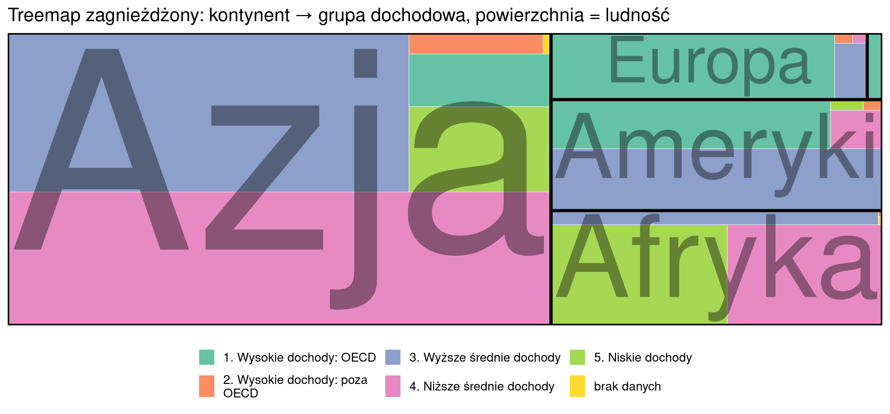
Rycina D.21: Grupy dochodowe według kontynentu, 2007: treemap, powierzchnia odpowiada liczbie ludności
Konstrukcja: cały prostokąt odpowiada łącznej ludności 142 krajów w roku 2007 (6,25 mld osób). Podział jest taki sam jak na poprzedniej rycinie: kontynenty (gruba czarna ramka), a w nich grupy dochodowe (barwa). Powierzchnia prostokąta jest proporcjonalna do sumy ludności krajów danej grupy na danym kontynencie, a nie do liczby krajów.
Wykres
Co pokazuje
mapa — barwa jakościowa według grupy
grupy tworzą zwarte obszary, a granica między nimi przebiega wzdłuż Sahary; sąsiedztwo krajów o tej samej grupie
kartodiagram: znak w środku kraju, barwa = grupa dochodowa, wielkość = liczba ludności
ten sam rozkład przestrzenny bez obciążenia powierzchnią pól odniesienia — Kanada i Australia, rozległe i mało ludne, przestają dominować obrazem, a małe kraje o dużej ludności, np. Bangladesz i Japonia, stają się widoczne
treemap zagnieżdżony: kontynent → grupa, powierzchnia = liczba krajów
ile krajów łącznie należy do każdej grupy i jak dzieli się na kontynenty
treemap zagnieżdżony: kontynent → grupa, powierzchnia = liczba ludności
jaka część ludności 142 krajów należy do każdej grupy na każdym kontynencie; ten sam podział co wyżej, ważony liczbą ludności
Podsumowanie
Wykresy odpowiadają na różne pytania o podobnym brzmieniu: mapa na pytanie „gdzie leżą kraje danej grupy”, treemap na pytanie „ile ich jest”, a kartodiagram na pytanie „gdzie i ilu osób to dotyczy”.
Zestawienie mapy z kartodiagramem pokazuje ograniczenie takiej mapy: barwę odbiorca odczytuje razem z powierzchnią pola odniesienia, dlatego Kanada i Australia zajmują na mapie więcej miejsca niż kraje Europy Zachodniej łącznie, choć mają kilkakrotnie mniej mieszkańców.
D.4.2 Czy klasyfikacja gospodarcza krajów pokrywa się z klasyfikacją dochodową?
Tabela D.15: Liczba krajów według grupy gospodarczej i grupy dochodowej, 2007
Grupa gospodarcza
1. Wysokie dochody: OECD
2. Wysokie dochody: poza OECD
3. Wyższe średnie dochody
4. Niższe średnie dochody
5. Niskie dochody
1. Rozwinięte: G7
7
0
0
0
0
2. Rozwinięte: poza G7
21
3
2
0
0
3. Rozwijające się: BRIC
0
0
2
1
0
4. Rozwijające się: MIKT
1
0
2
1
0
5. Rozwijające się: G20
0
0
10
7
2
6. Rozwijające się
0
7
18
16
0
7. Najsłabiej rozwinięte
0
1
1
6
32
Kod
tk <- dane2007 |>filter(!is.na(economy_grp), !is.na(income_grp)) |>count(economy_grp, income_grp)p1 <-ggplot(tk, aes(area = n, fill = income_grp, subgroup = economy_grp, label = income_grp)) + treemapify::geom_treemap(colour ="white") + treemapify::geom_treemap_subgroup_border(colour ="black") + treemapify::geom_treemap_subgroup_text(place ="centre", grow =TRUE, alpha = .4, colour ="black") +scale_fill_brewer(palette ="Set2", guide ="none") +labs(title ="Treemap: tylko kombinacje obecne w danych") + motyw_trzyp2 <- tk |>complete(economy_grp, income_grp, fill =list(n =0)) |>ggplot(aes(income_grp, fct_rev(economy_grp), fill = n)) +geom_tile(colour ="white") +geom_text(aes(label = n, colour = n >15), size =3.4, show.legend =FALSE) +scale_colour_manual(values =c("white", "grey10")) +# Liczność w skali cividis (granat -> żółty), odrębnej od barw grup dochodowych.scale_fill_viridis_c(option ="cividis", name ="Kraje") +scale_x_discrete(labels =label_wrap(12)) +scale_y_discrete(labels =label_wrap(16)) +labs(title ="Heatmapa: zero jest widoczne", x =NULL, y =NULL) + motyw_trzy +theme(legend.position ="none", panel.grid =element_blank(),axis.text.x =element_text(size =9))p3 <-ggplot(tk, aes(fct_rev(economy_grp), n, fill = income_grp)) +geom_col(position ="fill") +coord_flip() +scale_fill_brewer(palette ="Set2", name =NULL, labels =label_wrap(20)) +scale_x_discrete(labels =label_wrap(18)) +scale_y_continuous(labels =label_percent()) +labs(title ="Słupkowy skumulowany udziałów", x =NULL, y ="Udział grup dochodowych") +guides(fill =guide_legend(nrow =2, byrow =TRUE)) + motyw_trzy# Kolejność: treemap, słupkowy skumulowany, heatmapa. Wspólna legenda grup dochodowych# pod dwoma pierwszymi wykresami (oba przedstawiają grupę kolorem).legenda_grup <- (p1 + p3) + patchwork::plot_layout(guides ="collect") &theme(legend.position ="bottom", legend.text =element_text(size =13),legend.key.size =unit(1.1, "lines"))legenda_grup - p2 + patchwork::plot_layout(widths =c(2, 1))
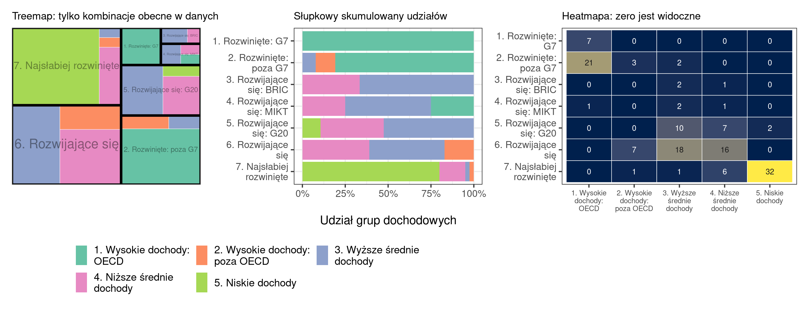
Rycina D.22: Grupy gospodarcze a grupy dochodowe, 2007: treemap, wykres słupkowy skumulowany i heatmapa liczności
Wykres
Co pokazuje
treemap zagnieżdżony: grupa gospodarcza → grupa dochodowa
tylko kombinacje, które występują — G7 jako jednolity prostokąt, najsłabiej rozwinięte jako prostokąt w przewadze jednej barwy
słupkowy skumulowany udziału grup dochodowych w każdej grupie gospodarczej
strukturę każdej grupy gospodarczej osobno, dokładnie i porównywalnie
heatmapa liczności grupa × grupa
gdzie są zera — 16 pustych komórek tworzy widoczny obszar poza przekątną; zgodność dwóch klasyfikacji odczytuje się jako skupienie wartości wokół przekątnej
Podsumowanie
Tylko heatmapa przedstawia brak kombinacji jako informację: wartość zero jest na niej widoczna, a na treemapie i na wykresie słupkowym nie ma odpowiadającego jej elementu.
Dla porównania: w zestawieniu kontynentu z grupą dochodową (pytanie „Czy rozmieszczenie grup dochodowych jest przestrzennie zróżnicowane?”) pustych kombinacji jest mniej — 6 z 25.
D.5 G. Gdzie mieszka ludność świata, a gdzie wytwarzany jest dochód
Czego chcemy się dowiedzieć: jaka część ludzkości mieszka w każdym regionie, jaka część dochodu świata w nim powstaje i jak nierówny jest ten rozdział.
Pytania badawcze w tym problemie:
Czy udział regionu w ludności świata odpowiada jego udziałowi w gospodarce?
Czy udział kontynentów w ludności świata zmienił się w latach 1952–2007?
D.5.1 Czy udział regionu w ludności świata odpowiada jego udziałowi w gospodarce?
Kod
dane2007 |>mutate(pkb_total = pop * gdpPercap) |>group_by(Kontynent = kontynent) |>summarise(pkb =sum(pkb_total), lud =sum(pop)) |>mutate(`Udział w ludności [%]`=round(100* lud /sum(lud), 1),`Udział w PKB [%]`=round(100* pkb /sum(pkb), 1),`Różnica (p.p.)`=round(`Udział w PKB [%]`-`Udział w ludności [%]`, 1)) |>select(-pkb, -lud) |>arrange(desc(`Różnica (p.p.)`)) |>tab()
Tabela D.16: Udział kontynentów w ludności i w PKB 142 krajów, 2007
Rycina D.23: Struktura ludności i PKB według kontynentów i krajów, 2007: dwa treemapy
Konstrukcja: każdy mały prostokąt to jeden z 142 krajów, a kraje są zgrupowane w bloki kontynentów (barwa i napis). Po lewej powierzchnia prostokąta jest proporcjonalna do liczby ludności kraju, po prawej — do łącznego PKB kraju, liczonego jako liczba ludności × PKB per capita (w dolarach amerykańskich, skorygowany o inflację). Dane z roku 2007; udziały dotyczą sumy dla 142 krajów zbioru. Położenie prostokątów wynika z algorytmu układania, dlatego bloki kontynentów leżą na obu rycinach w innych miejscach.
Kod
ud <- dane2007 |>mutate(pkb_total = pop * gdpPercap) |>group_by(kontynent) |>summarise(Ludność =sum(pop), PKB =sum(pkb_total)) |>mutate(Ludność =100* Ludność /sum(Ludność), PKB =100* PKB /sum(PKB)) |>pivot_longer(-kontynent, names_to ="wielkosc", values_to ="udzial")p1 <-ggplot(ud, aes(udzial, fct_rev(kontynent), fill = wielkosc)) +geom_col(position ="dodge") +scale_fill_brewer(palette ="Set1", name =NULL) +labs(title ="Słupkowy zgrupowany udziałów", x ="Udział w świecie [%]", y =NULL) +theme_minimal(base_size =15) +theme(legend.position ="bottom")p2 <-ggplot(ud, aes(wielkosc, udzial, group = kontynent, colour = kontynent)) +geom_line(linewidth =1.2) +geom_point(size =3) +geom_text(data =filter(ud, wielkosc =="PKB"), aes(label = kontynent),hjust =-.12, size =4.5, show.legend =FALSE) +scale_colour_brewer(palette ="Dark2", guide ="none") +expand_limits(x =2.8) +labs(title ="Nachyleniowy: ludność → PKB", x =NULL, y ="Udział w świecie [%]") +theme_minimal(base_size =15)p1 + p2
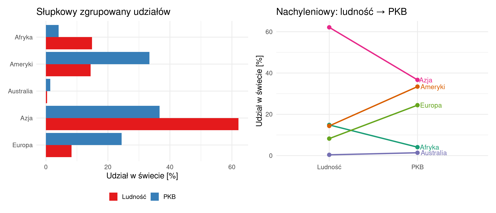
Rycina D.24: Udział kontynentów w ludności i w PKB, 2007: wykres słupkowy zgrupowany i wykres nachyleniowy
Wykres
Co pokazuje
dwa treemapy o tej samej hierarchii, powierzchnia = ludność i = PKB
obie struktury naraz, z zachowaniem podziału na kraje wewnątrz kontynentu
wykres słupkowy zgrupowany: para słupków dla każdego kontynentu
różnicę dla każdego kontynentu, odczytywaną ze wspólnej osi
wykres nachyleniowy: odcinek od udziału w ludności do udziału w PKB
kierunek i wielkość przesunięcia w jednym znaku graficznym; przecinające się odcinki Azji i Ameryk
Podsumowanie
Pytanie dotyczy relacji między dwiema strukturami, a nie każdej z nich osobno.
Dwa treemapy przedstawiają obie struktury dokładnie, ale porównanie pozostawiają odbiorcy.
Wykres nachyleniowy przedstawia obie struktury w mniejszym stopniu, ale najlepiej odpowiada na pytanie.
Dokładność przedstawienia danych i trafność odpowiedzi na pytanie są dwiema różnymi własnościami wykresu.
D.5.2 Czy udział kontynentów w ludności świata zmienił się w latach 1952–2007?
Tabela D.17: Udział kontynentów w ludności 142 krajów, 1952–2007 [%]
Rok
Afryka
Ameryki
Australia
Azja
Europa
1952
9,9
14,3
0,4
58,9
16,4
1957
9,9
14,5
0,4
59,6
15,5
1962
10,2
14,9
0,5
59,5
14,8
1967
10,4
14,9
0,5
60,3
13,9
1972
10,6
14,8
0,5
61,2
12,9
1977
11
14,7
0,4
61,8
12,1
1982
11,6
14,7
0,4
62
11,3
1987
12,3
14,6
0,4
62,3
10,4
1992
12,9
14,5
0,4
62,4
9,8
1997
13,5
14,4
0,4
62,5
9,2
2002
14,2
14,4
0,4
62,3
8,7
2007
14,9
14,4
0,4
62,1
8,2
Kod
ud <- dane |>group_by(year, kontynent) |>summarise(p =sum(pop), .groups ="drop") |>group_by(year) |>mutate(udzial =100* p /sum(p)) |>ungroup()p1 <-ggplot(ud, aes(year, udzial, fill =fct_rev(kontynent))) +geom_area(colour ="white", linewidth = .2) +scale_fill_brewer(palette ="Dark2", name =NULL) +labs(title ="Warstwowy skumulowany", x ="Rok", y ="Udział w ludności świata [%]") + motyw_trzy +theme(legend.position ="bottom", legend.text =element_text(size =11))p2 <-ggplot(ud, aes(year, udzial, colour = kontynent)) +geom_line(linewidth =1) +geom_point(size =1.4) +geom_text(data =filter(ud, year ==2007), aes(label = kontynent),hjust =-.1, size =3, show.legend =FALSE) +scale_colour_brewer(palette ="Dark2", guide ="none") +expand_limits(x =2022) +labs(title ="Liniowy udziałów", x ="Rok", y ="Udział [%]") + motyw_trzyp3 <- ud |>filter(year %in%c(1952, 2007)) |>ggplot(aes(factor(year), udzial, fill =fct_rev(kontynent))) +geom_col(position ="fill", colour ="white") +scale_fill_brewer(palette ="Dark2", guide ="none") +scale_y_continuous(labels =label_percent()) +labs(title ="Słupkowy skumulowany: 1952 i 2007", x ="Rok", y ="Udział") + motyw_trzy# wspólna legenda pod rycinamip1 + p2 + p3 +plot_layout(guides ="collect") &theme(legend.position ="bottom", legend.text =element_text(size =11))
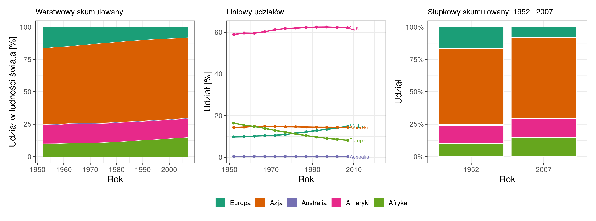
Rycina D.25: Udział kontynentów w ludności 142 krajów, 1952–2007: wykres warstwowy skumulowany, wykres liniowy i wykres słupkowy skumulowany
Wykres
Co pokazuje
wykres warstwowy skumulowany
udziały sumują się do 100% i jak zmienia się podział całości
wykres liniowy udziałów, pięć linii od wspólnej osi
przebieg każdego kontynentu osobno: spadek Europy o 8,2 p.p. i wzrost Afryki o 5,0 p.p.
wykres słupkowy skumulowany dla 1952 i 2007
zestawienie punktu początkowego i końcowego, bez pośrednich
Podsumowanie
Na pytanie „jak zmieniał się udział” wykres warstwowy i liniowy odpowiadają równie dobrze, a wybór między nimi zależy od tego, co ma zostać wyróżnione: podział całości czy przebieg dla pojedynczego kontynentu.
O wyborze decyduje to, który element pytania jest ważniejszy.
Trzeci wykres zawiera mniej informacji i odpowiada na węższe pytanie „o ile zmienił się udział”, ale odpowiada na nie najszybciej.